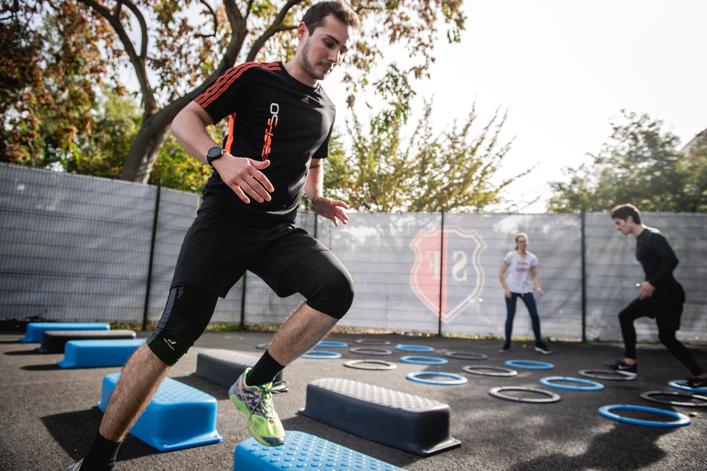

3 Reasons why you should limit Cardio during Fat-loss
For the common masses, cardio has become synonymous with fat loss. “You want to lose weight? Start running!”, is by far the most common fat-loss advice you will get.
As of 2019, the mainstream image is that cardio is what you do to lose fat and get “toned”. Whereas, weight training is what you do to build muscle and look “bulky”. Naturally, with such a reputation in the air, most women stay away from lifting weights and stick to the treadmill, and maybe a couple of belly exercises at best.
But is that even true? Is doing lots of cardio the correct way to lose fat and get in shape?
1. Cardio does not causes fat loss by itself
Ha! Isn’t that a deal breaker.
Cardio is not what causes you to lose fat. A calorie deficit is the only thing makes your body lose fat. At the end of the day, your body only knows the energy balance that you are in. If you eat less calories than what you burn throughout the day, you will lose fat. Otherwise, you will not.
In the picture above you can see how the same energy deficit can be created through eating fewer calories or burning more calories. Our bodies will burn fat to compensate for the energy deficit. The amount of fat loss in both situations will be approximately the same.
Sure, doing cardio burns some calories, increasing the energy out side of the equation (the red bar). But you can do all the cardio you want, if you are not eating in a net calorie deficit, you will not lose fat. Period. [1]
I say that because the calories you burn during cardio are only a handful anyway, equivalent of 3-4 cookies at best. And if someone is not counting their calorie intake (the green bar), all the time and sweat invested in doing cardio can be washed away in a minute.
So, it is just not practically possible to create a meaningful calorie deficit by doing cardio alone. Reducing your energy intake (food) is what is going to create the majority of your calorie deficit.
The role of cardio in fat loss is thus only supplemental at best. And cardio is certainly not the sole driver of fat loss.
Pro Tip: Even if the cardio which you choose to do has a reputation of burning more fat as fuel while doing it, like fasted cardio or HIIT sessions, it does not means more fat loss overall! At the end of 24 hours, the net fat loss would still be dictated by the net calorie deficit. You see, if you burn more fat during exercise, you end up burning less fat and more carbs during the rest of the day. [6] [7] [8]
Simply put, your body is way smarter than you and you can not fool the 1st law of thermodynamics.
Cardio does not causes fat loss in and of itself. The fat loss only depends on the net calorie deficit created. As a sustainable recommendation, experts suggest that creating 80-90% of your deficit through your diet and 10-20% through cardio to be a good practice.
2. Cardio plays no role in maintaining muscle mass

As I have already explained before in my fat loss article, for anyone looking to get in shape, the goal should not be to lose just fat, but to lose fat while maintaining their muscle mass.
You see, getting in shape basically boils down to improving your body composition, and not just reducing the number on the weighing scale.
Most people trying to lose fat give too much importance to cardio and too little to lifting weights, if at all. When in reality, according to science, they should have been doing the exact opposite!
In a state of calorie deficit, your body literally has to burn it’s own reserves of fat and muscle to make the ends meet. Under such a situation, you need to give your muscles a solid reason to stay.
Resistance training or weight training is the external stimulus which tells your body that it needs to keep the muscle in face of the workouts (think of it like survival adaptation).
I repeat, weight training becomes a must to maintain your muscle mass during a fat loss phase. (And ladies, that goes for you as well!) [2]
To put it another way, your body does operate on “use it or lose it” principle. Cardio does not “uses” your overall muscles to any significant degree, resistance training does. So, make sure you are hitting the gym 3-4 days each week, whatever suits your lifestyle the best.
Essentially, doing cardio is really optional for losing fat, or more specifically improving body composition and getting in your best shape. Whereas resistance training is a must! That being said, ditching cardio completely isn’t a good idea either. I would recommend doing some cardiovascular work on a weekly basis to keep your conditioning and endurance in check.
Pro tip: Stay away from the kind of cardio you don’t enjoy. Any activity that gets your heart rate up will deliver the benefits that “cardio” has to offer. If you love playing a sport every once in a while, go with that. If you love traditional gym cardio (treadmills and whatnot), then go with that. Keep things simple, and fight more meaningful battles.
Cardio plays no role whatsoever in preserving your lean muscle mass during a fat loss phase. Resistance training is what is crucial and should be the bread and butter of your fat loss training program. As a practical recommendation for fat loss, most experts suggest that 80-100% of your training should revolve around lifting weights, while only 0-20% of your work should involve cardiovascular work.
3. Excessive cardio can cause recovery issues
In a state of calorie deficit, your body’s ability to recover is quite limited. Now as we have already established, you must mostly stick to resistance training for losing fat. But I forgot to mention, and this should not come off as a surprise, but resistance training also places heavy recovery demands on your body.
Which is okay, you will recover just fine. The problem starts to occur when people also try to fit in loads of cardio along with their weight-training regiment!
Like any external stimulus, cardio too imposes recovery demands on your body. And if you are smart (which you are if you have read this far! :P), you’d want to make sure to limit your cardio sessions. So that they don’t start interfering with your muscle recovery. This is also called as the “interference-effect”. [3] [4] [5]
Dr. Eric Helms puts it best,
“A calorie deficit is also a recovery deficit. Avoid deficit spending.” – Dr Eric Helms, PhD, MS (Pro Natural BodyBuilder)
Unfortunately, most people do the opposite. Probably because most people have been led to believe that “doing more always means more and better results”. Nothing can be further away from the truth when it comes to fitness. Everything has a right dosage, be it nutrition or training.
Pro Tip: I would recommend against doing your cardio work just before your weight training workout, as that can significantly affect your strength and performance during the workout.
You see, to get in your best shape, weight training and diet should always be treated as the number one priority. For that reason, you always want to enter your weight training workout with your full physical strength and mental focus. Pre-fatiguing yourself by performing cardio first, would be foolish.
While doing some cardio can be beneficial for overall conditioning and cardiovascular health, doing lots of it under the state of a calorie deficit is a sure shot way to accelerate muscle loss. As a safe recommendation, limit your total weekly cardio to 1-2 hours.